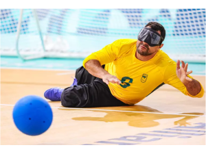

O Goalball é mais do que um esporte para pessoas com deficiência visual; é uma prova de superação, habilidade e trabalho em equipe. Desenvolvido especialmente para atletas cegos ou com baixa visão, o esporte promove não apenas a prática esportiva, mas também o fortalecimento da inclusão e da autoestima.
Com regras adaptadas, como a utilização de uma bola sonora e o silêncio absoluto durante o jogo, o Goalball proporciona uma experiência única, desafiando seus participantes a desenvolverem ainda mais os sentidos de audição, estratégia e agilidade.
Na Blind Gajos, temos orgulho de dizer que nossa ONG possui uma forte ligação com o esporte e com a própria Seleção Brasileira de Goalball. Muitos dos jogadores que hoje representam o Brasil em competições internacionais começaram suas trajetórias em projetos apoiados por nossa instituição.
Essas conquistas não apenas reafirmam nosso compromisso com a inclusão através do esporte, mas também mostram o impacto transformador que essas iniciativas podem ter na vida de jovens atletas. Cada vitória e cada medalha são o reflexo do trabalho dedicado que fazemos em nossas comunidades.
Apesar de ser um dos esportes paralímpicos mais emocionantes e competitivos, o Goalball ainda carece de maior visibilidade no Brasil. É fundamental que mais pessoas conheçam e apoiem essa modalidade, que é uma verdadeira celebração da capacidade humana de superar desafios.
Ao divulgar e investir no Goalball, ajudamos a derrubar barreiras, incentivamos novos talentos e promovemos a inclusão social. A prática desse esporte é uma oportunidade de mostrar que as diferenças são apenas mais uma razão para nos unirmos como sociedade.
A Blind Gajos tem orgulho de fazer parte dessa história. Nossos projetos esportivos continuam formando não apenas atletas, mas também cidadãos confiantes e determinados.
Seja um apoiador dessa causa! Entre em contato com a Blind Gajos e descubra como você pode contribuir para fortalecer o Goalball e transformar vidas através do esporte.